| 日付 | 2024年2月10日（土） - 2024年2月11日（日） |
|---|---|
| メンバー | 家族（妻、長女・12歳、長男・10歳） |
| アクセス | 車 |
今シーズン2回目のスキー旅行はグランディ羽鳥湖で。
ここに来るのは3回目だ。
それほど規模は大きくないが、いくつかのコースがあり、
併設のレストランも良かった記憶がある。
今年はいろいろ忙しく、3連休の中しか予定が空かなかった。
グランディ羽鳥湖であれば、高速道路もスキー場も
大して混まないであろうと考え、計画を立てる。
1日目
スキー場に到着。本日は見事な快晴だ。
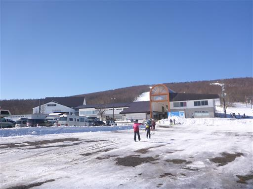
地面は凍り付いていて、さっそく息子が滑ってこけている。
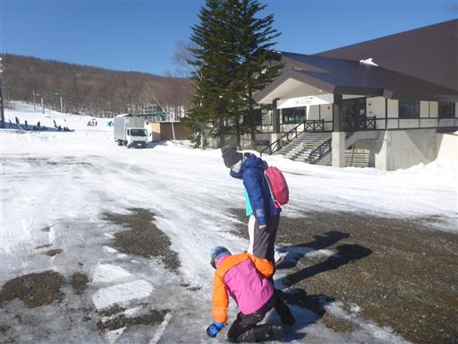
スキー板をレンタルして早速スキー開始。
3連休だけあってそこそこ列ができている。

このスキー場はゴンドラがないのが残念だが、快晴の下だとリフトも気持ちが良い。
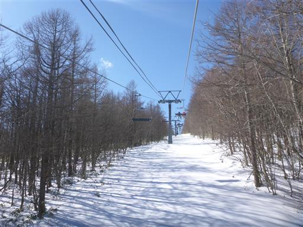
見事な展望が広がる。遠くに見える雪山は安達太良山だ。
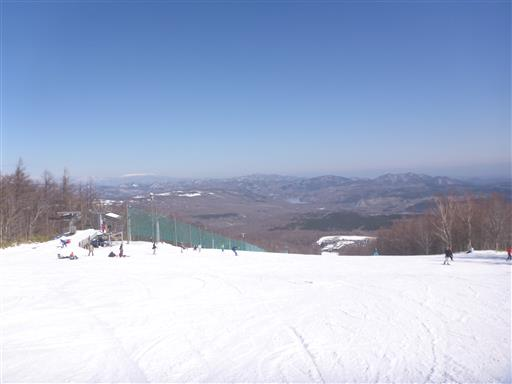
早速スキー開始。
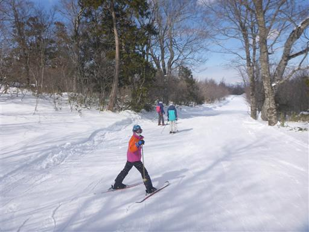
レストランが混雑してそうなので少し時間をずらして行くが、それでもかなり待たされる。
以前やっていたクオリティの高いスペシャル定食はなくなっており、
割高の普通のメニューしかなくなっていたのはちょっとがっかりだ。
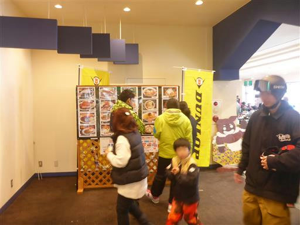
午後も天気が良い。真正面には安達太良山だ。
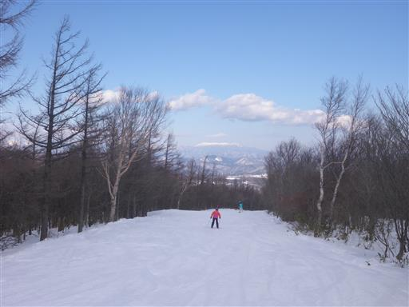
スキーを終えたら本日の宿、プルミエールに移動。
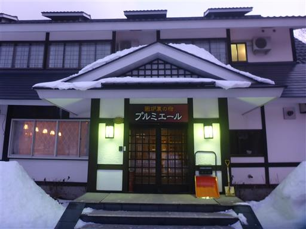
風呂に入った後、夕食まで時間があるので少し周囲を散策する。
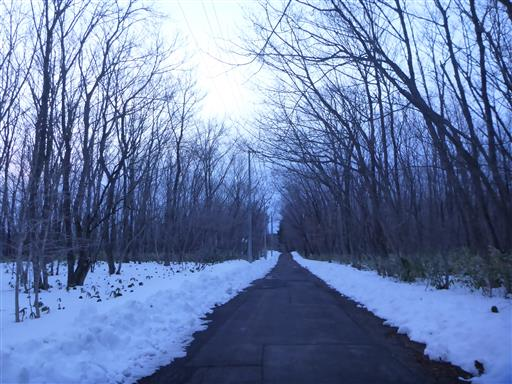
夕食は囲炉裏のそばで。雰囲気があって非常に良い。
食事は質量とも十分で、非常に良い宿だった。
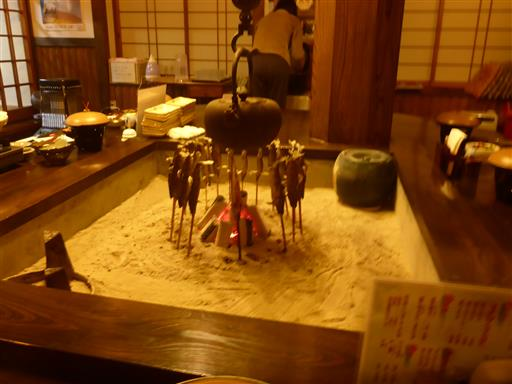
2日目
本日は雪が降っていて天気が悪い。車もだいぶ雪が積もっていた。
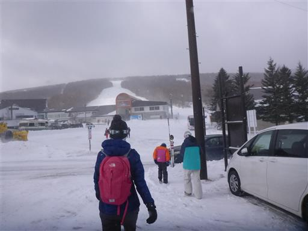
雪の中、スキー開始。
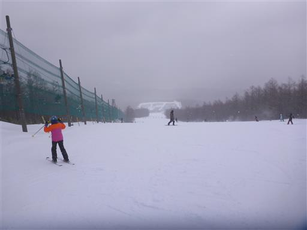
3連休の中日は昨日以上に混んでいる。リフトに乗るのにかなり待たされる。
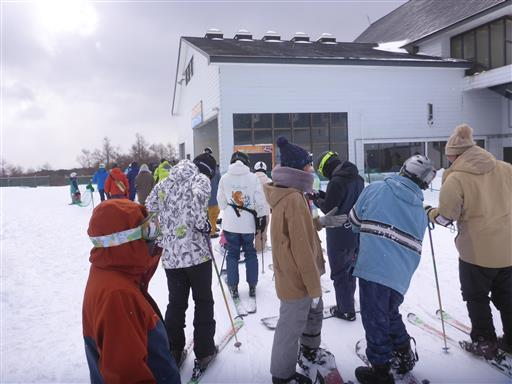
雪の結晶を発見。
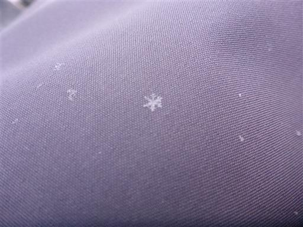
青空が出たり、雪が降ったり、天気はめまぐるしく変わる。
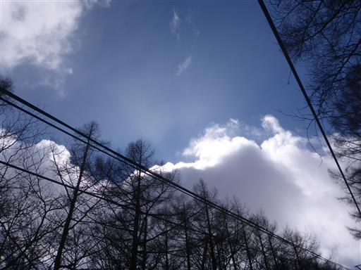
午後になるとますますリフトの列は長くなる。
メインリフトは諦めて、遠くにある人影の少ないリフト中心にスキーをする。
明日も休みなので、16時までスキーをやったら撤収。
今回は宿は非常に良かったが、スキー場はかなり混雑していたのと
レストランがダウングレードしていたのが残念だった。
息子は今年、パラレルターンを練習しており、2回のスキー旅行でだいぶ上達した。
このまま上手くなっていってほしい。